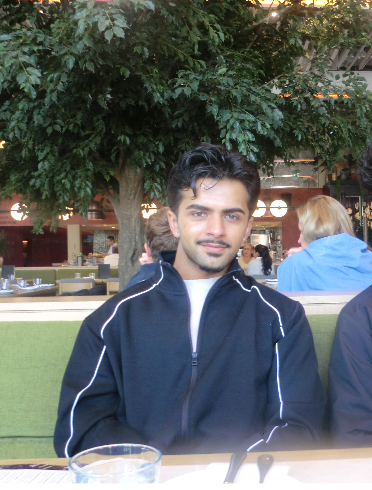

- Built a 229M-parameter Convolutional Neural Network (CNN) from scratch in PyTorch on 680 training images; benchmarked 7 activation functions, including a custom one (56–67% test accuracy).
- Improved test accuracy from 66.7% to 80.0% (+13 pts) using transfer learning with pretrained ResNet-18/50/152; frozen backbones beat fine-tuning on deeper models (75.0% vs. 61.7%).
- Raised minority-class recall from 40% to 67% on a 4:1 imbalanced dataset using WeightedRandomSampler, evaluated with balanced accuracy and per-class precision/recall.
github.com/IFDES
University of Alberta
CS Specialization
Ali Zain Malik
Software Engineer
Edmonton, Canada · linkedin.com/in/ali-zain-malik · alizainkmalik@gmail.com
Projects
Things I have built for courses and on my own.
- Designed a modular relational data model (authors, posts, follows, inbox, interactions) supporting federated data exchange across independent nodes via REST APIs.
- Built RESTful endpoints for remote author discovery and structured inter-node data synchronization.
- Implemented data access controls (public/private visibility) and an inbox-based data delivery pipeline.
- Coordinated development across a multi-person team using GitHub Projects for task tracking and prioritization.
- Developed a real-time application using Firebase Firestore to store, retrieve, and analyze mood data.
- Designed Firestore schemas and optimized queries, improving data retrieval performance by ~20%.
- Collaborated in a 4-person team using GitHub workflows and added unit/UI testing for data reliability.
- Implemented anti-aliasing and supersampling techniques to improve rendering quality.
- Optimized memory usage and execution flow using pointer-based data structures.
- Strengthened understanding of low-level systems programming and performance optimization.
Experience
Where I have worked and taught.
- Performed data validation and quality evaluation on curated fact/dimension tables (50,000+ records), filtered and aggregated from source tables containing millions of raw rows, reducing reporting discrepancies by 15%.
- Queried and validated data from Oracle databases (Maximo ADW) using Oracle Client, integrating query outputs into Power BI KPI reporting and downstream data validation workflows.
- Designed and implemented a Kimball star schema data model using PySpark on Databricks (Azure), restructuring raw ingestion pipelines into fact/dimension tables to support scalable, self-service BI reporting.
- Authored SQL queries to calculate SMRP (Society for Maintenance & Reliability Professionals) reliability metrics, quantifying the effectiveness of business processes and technician teams for 10–20 senior stakeholders.
- Built and maintained 4 Power BI dashboards on top of the star schema data model, translating validated datasets into visualizations that reduced manual reporting turnaround time by 25%.
- Authored and optimized complex SQL queries across multiple joined tables with millions of rows, streamlining ETL pipelines into the EDL and reducing manual data extraction time by 30%.
- Configured 3–5 IBM Maximo Start Centers aligned with operational workflows, improving technician efficiency by 20% through enhanced data accessibility.
- Assisted 120+ students with debugging, algorithmic thinking, and structured problem-solving.
- Reviewed assignments and provided detailed feedback to improve correctness and code quality.
- Analyzed customer requirements and translated them into structured solutions using internal systems.
- Improved transaction workflows, reducing processing time by approximately 15%.
Volunteering
- Led a 14-member executive team and coordinated large-scale events and initiatives.
- Created local table tennis tournaments through coordination, organization, and teamwork.

Who I Am
My missionHi Everyone :), my name is Ali Zain Malik (yes you read that right, maybe I do share a similar name to a certain One Direction Member 🤔). I am a Computer Science Specialization student at the University of Alberta and an aspiring software engineer. I enjoy taking problems and solving them using creative and efficient approaches. I also am very passionate about sports and a big fan of Liverpool FC. YNWA.
- Bachelor of Science, Computer Science — Specialization
- Relevant Coursework: Machine Learning I, Machine Learning Essentials, Reinforcement Learning, Applied Statistics I & II, Algorithms I & II, File and Database Management
- Languages: Python, SQL, Java, C, JavaScript
- Data & ML Libraries: PySpark, Pandas, Scikit-learn, NumPy, Matplotlib, PyTorch
- Statistics & Machine Learning: Statistics, Regression Analysis, Classification, Model Evaluation, Reinforcement Learning
- Databases: Oracle, Microsoft SQL Server, PostgreSQL, MongoDB, Firebase Firestore
- Data Platforms: Databricks, Power BI, Tableau, Microsoft Excel
- Cloud & Tools: Microsoft Azure, Git (GitHub), Windows OS, PowerShell, IBM Maximo, ServiceNow
- Core Skills: Requirements Gathering, Problem-Solving, Communication, Time Management